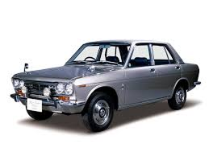
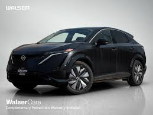

Historia de Nissan
La historia de Nissan comienza en 1911 con la fundación de la Kwaishinsha Motor Car Works por Masujiro Hashimoto en Tokio, Japón. Tres años después, en 1914, presentó su primer vehículo, el DAT, nombre formado por las iniciales de sus socios (Den, Aoyama y Takeuchi). Durante los años 20, la compañía pasó por varias fusiones y cambios de nombre, fabricando principalmente autos pequeños y camiones bajo la marca DAT Motorcar Co.
Tras la Segunda Guerra Mundial, Nissan sufrió graves daños en sus fábricas y una crisis económica, pero poco a poco logró recuperarse. El gobierno japonés fomentó la reconstrucción industrial, y Nissan jugó un papel clave al enfocarse en autos pequeños, económicos y fáciles de mantener. En 1952, Nissan firmó un acuerdo con Austin Motor Company del Reino Unido para producir autos bajo licencia británica, incorporando así tecnología moderna y mejorando su calidad.
Durante los años 70, Nissan abrió fábricas fuera de Japón y se consolidó como una marca global. En 1980, comenzó a utilizar oficialmente el nombre Nissan en todos sus modelos, reemplazando gradualmente la marca Datsun. La empresa también destacó por su innovación tecnológica, desarrollando motores más eficientes y sistemas electrónicos que mejoraron el rendimiento y redujeron emisiones. Modelos como Nissan Patrol, Sunny, Sentra y Skyline marcaron la identidad de la marca.
Hoy, Nissan sigue siendo una marca líder en innovación, confiabilidad y sostenibilidad, con más de 110 años de historia y un firme compromiso con la movilidad eléctrica y el cuidado del medio ambiente.